I find PM-ing anything genuinely exciting. The proposed analysis and the solutions draw largely on my experience implementing many of these specific approaches at scale for brands with high-consideration purchases. I'm curious to see how they'll play out in a different product category.
I've used AI (Claude Opus & Sonnet in VS Code Copilot) majorly only to visualise this submission and add connective phrasing between sentences. The research, solutions and narrative were developed through my thoughts and experience, online secondary research and a few suggestions from LLMs. I have marked the solutions suggested by AI with an AI suggestion tag.
This submission was enriching!
Help buyers find, compare and fall for the right watch, faster.
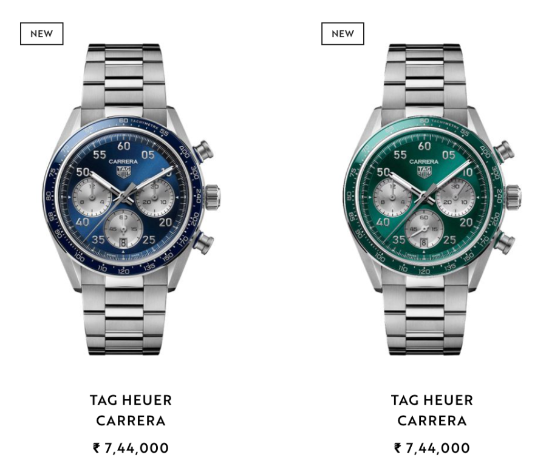
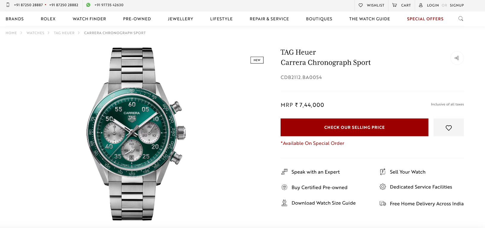
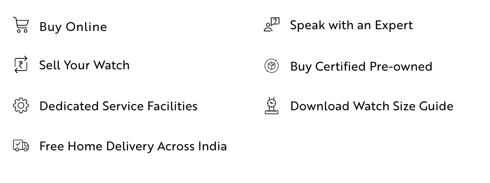
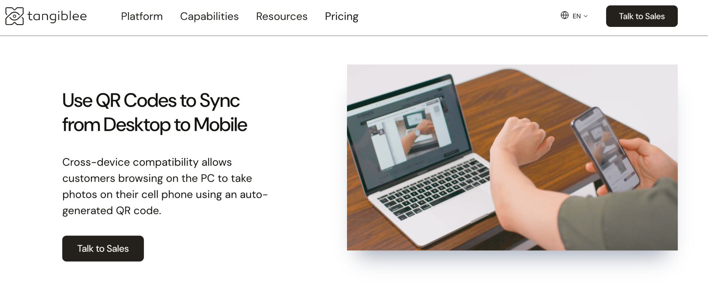
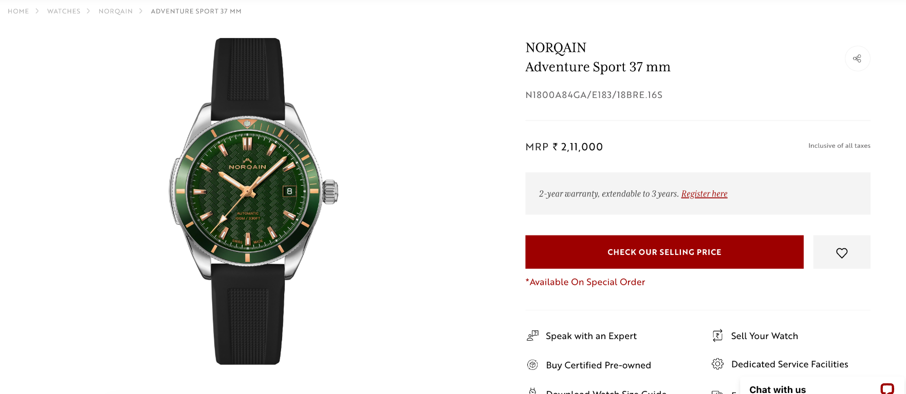
These days a buyer asks AI first. Ethos needs to be the answer.
Ethos already ranks at the top in AI chat discovery:
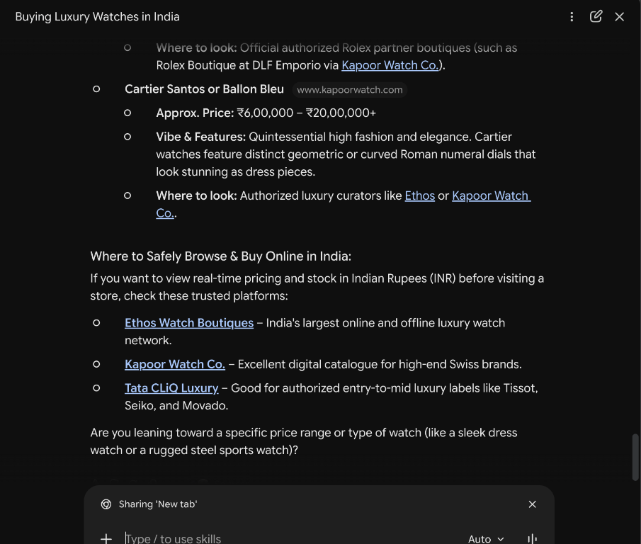
But as the screenshots below show, answer citations and product-recommendation URL redirections often do not point to Ethos, so click-throughs from AI answers are weak. The work is to track how AI describes the brand, fix it, and measure the traffic that converts across ChatGPT, Gemini, Perplexity and AI Overviews.
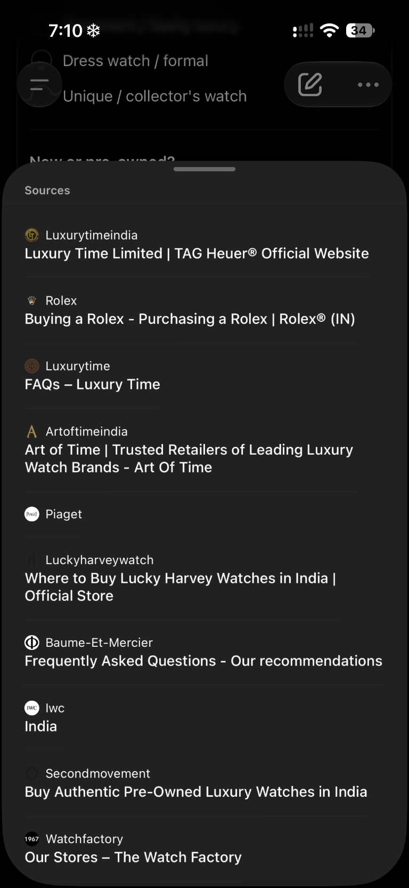
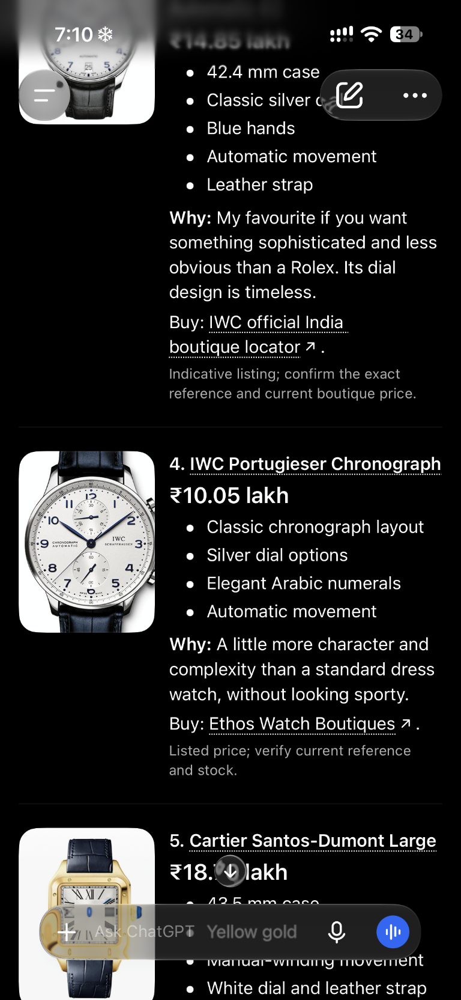
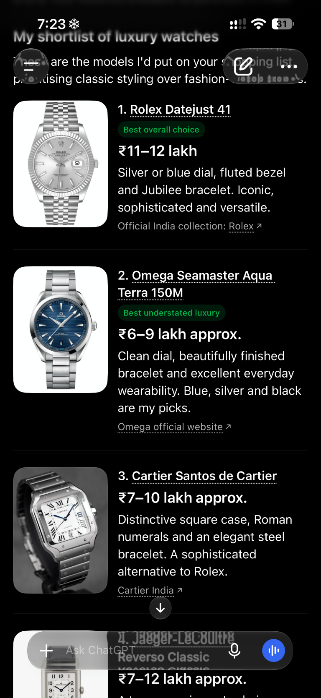
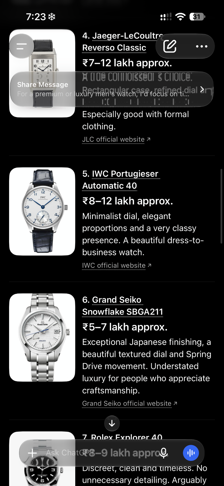
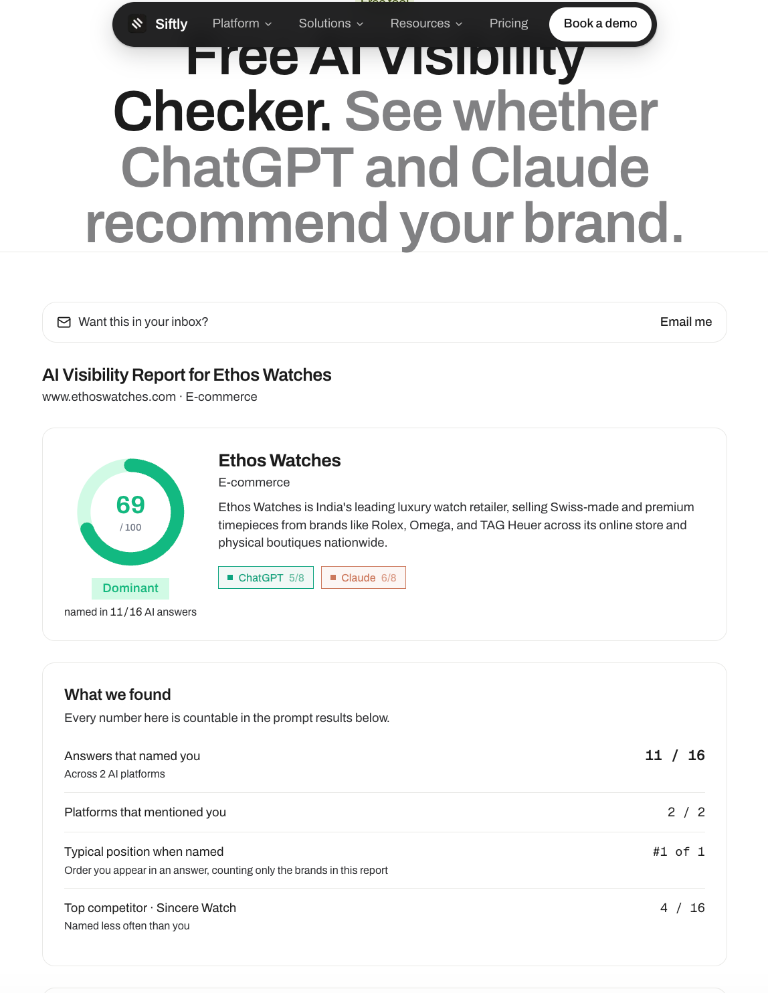
The AI Visibility Report above for Ethos Watches shows that Ethos's presence is strong, but there is room for improvement. Siftly, a Y Combinator-backed tool (a company I am currently in talks with for my current company), provides a strong solution to fix this at a relatively low cost (less than ₹1 lakh per month). It does the following for us:
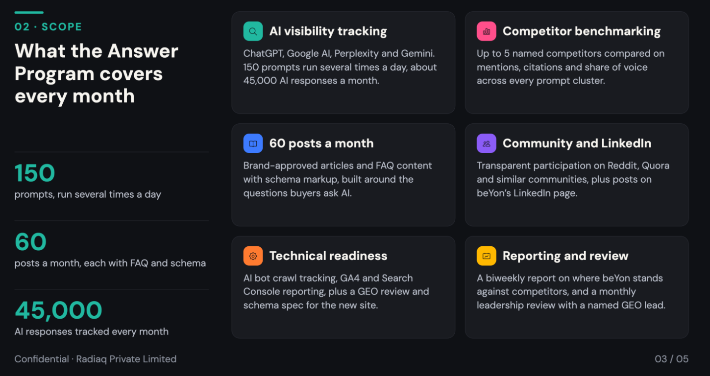
Pages are loading slowly.
The Google Lighthouse speed score is in the red, with multiple suggestions flagged:
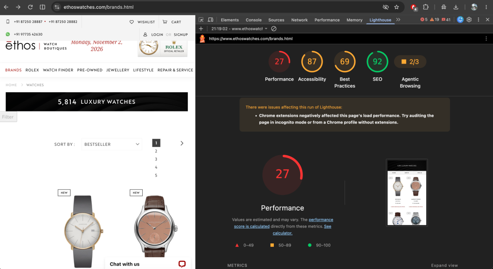
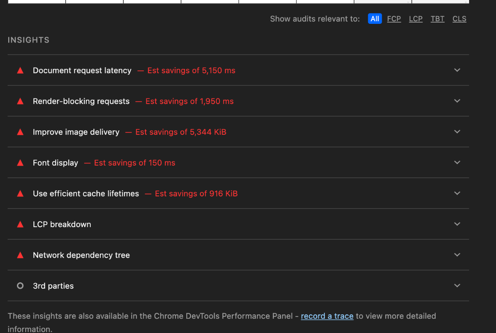
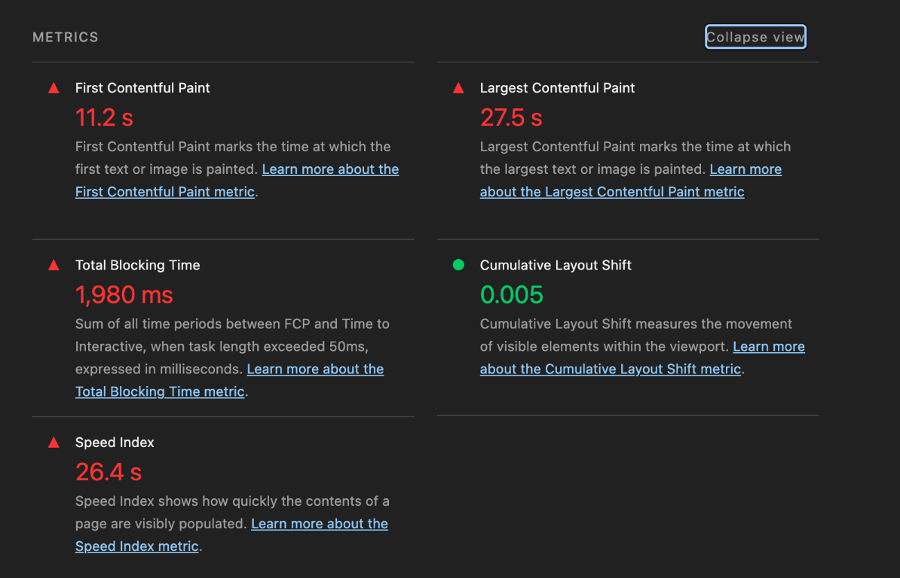
Image rendering is one of the key contributors to the low speed. Since this is a luxury platform, we can't compromise on quality.
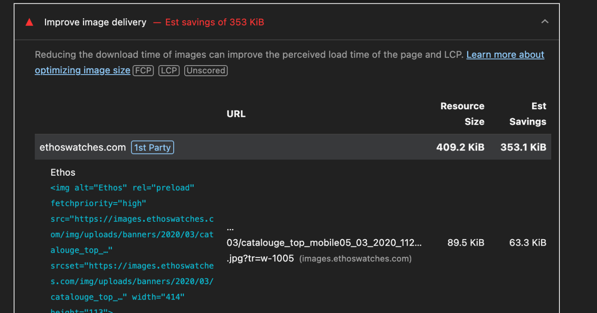
A. Introduce live video shopping from stores, or let buyers schedule a video call. Even Apple does it, in an elegant way:
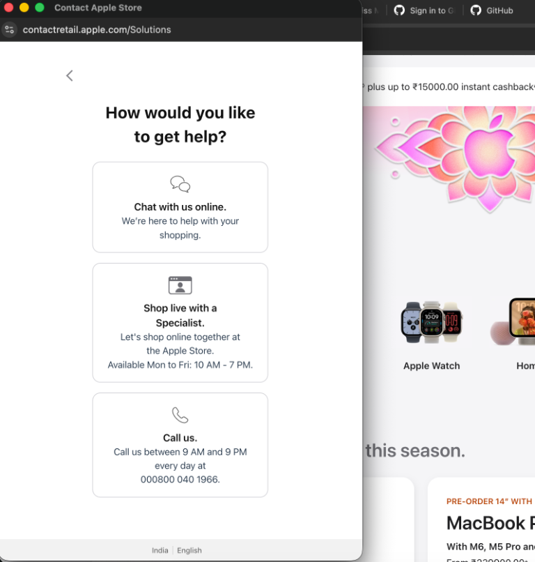
Live video shopping increases lead generation, and assisted conversion runs at about 15%.
B. Book an appointment from every product page. Choose a nearby store, date, time, and whether to view in store, by video call or at home. Send an automatic WhatsApp confirmation and route the lead to that store's CRM.
C. In-store stock visibility. Show what each boutique has on its floor, as in the store page below. It sets expectations and gives buyers an aspiration to visit the store. The full stock need not be shown: tease selected pieces with labels like "Under the wraps" or "Just arrived".
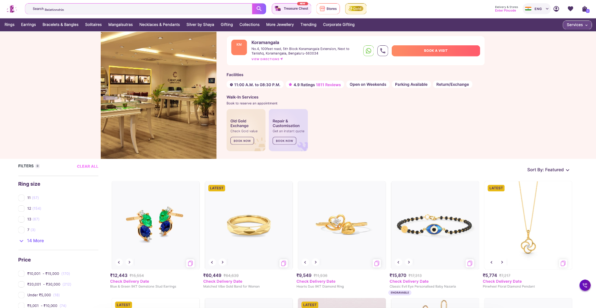
Trade-in valuation on product pages. "Upgrade your watch – get an instant estimate" using Second Movement data. Upgraders are high-value buyers, and this captures both sides of the deal. In my experience this works wonderfully for lead generation: it mirrors the exchange-for-old-gold programmes in the jewellery business.
Implement the lead scoring algorithm as discussed in the interview. Build a customer data platform from existing CleverTap/GA4 data. Score visitors on behaviour (repeat product views, price band, comparisons) and send hot visitors to advisors by WhatsApp or phone within 15 minutes.
Start with the quick wins, then build.
Compress images without losing quality (N7) and fix server caching, which are the fastest speed wins. Switch on in-store stock visibility, since store stock already flows through the systems. Turn the plain-text service links into proper buttons, with one primary call-to-action. Add live video shopping through the Poppin plugin and an appointment booking button on every product page.
Defer render-blocking scripts and fonts. Show colour variants as swatches on the product page and add more images per watch. Launch the trade-in valuation and start the AI visibility programme with Siftly.
Launch guided browsing by occasion and budget and the two-way Watch Guide links. Pilot virtual try-on and roll out lead scoring, with hot visitors going to an advisor within 15 minutes. Review leads, appointments and AI-referred sessions against the KPIs.